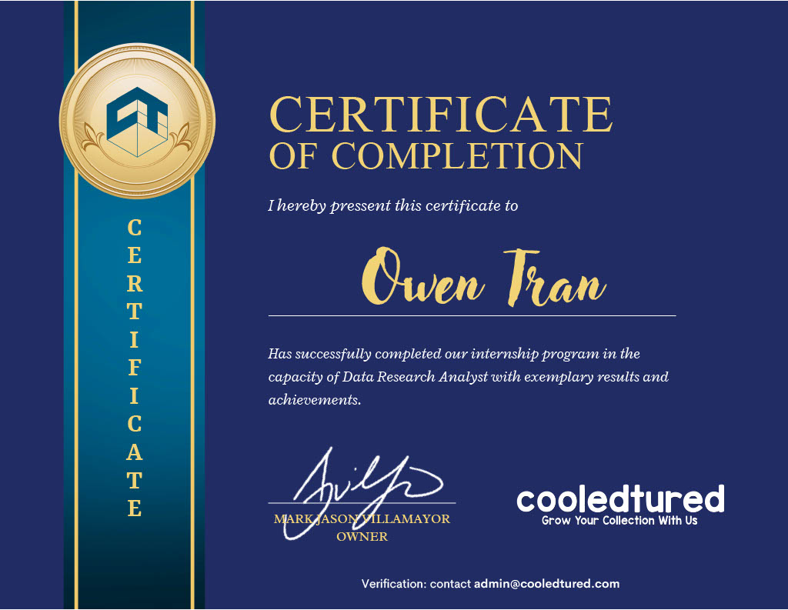
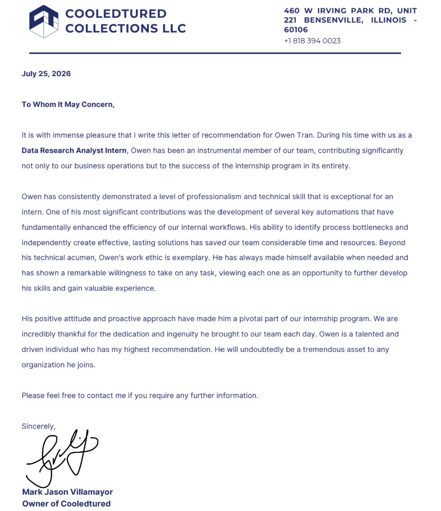

- Python
- Microsoft SQL Server
- Supabase
- R
Data Science Student
Analyzed causal inference by an randomized A/B experiment in Qualtrics to analyze whether a local geospatial image increased community action
Differential equations, and applied linear algebra; developed foundations in calculus, vector analysis, and matrix operations.


Cleaned, validated, and created vis’s on 200K+ real estate listings from the CoreLogic API to uncover pricing, market, and agent performance trends. Built two Tableau workbooks to identify overlooked high-performing real estate agents using sales volume, pricing, consistency, and days-on-market metrics.
CSE (40933, 41332): SQL, CTEs, window functions, procedures, indexing, Advanced SQL, optimization, security, backup/recovery
CSE (41416, 41280): Cloud data and AWS cloud architecture
CSE (40028, 41273, 41310, 41203): File handling, testing, debugging, concurrency, regular expressions, OOP, data structures(arrays, heaps, queues, binary trees), and decision trees.
DSC 10,20,30,40A,40B,80,106 -> Developed strong Python data science skills using Pandas, NumPy, data cleaning, statistical analysis, visualization, and machine learning.
Monitored guest safety and rescued 18 distressed swimmers in a high-traffic waterpark.
Operated and troubleshot sound, lighting, and stage equipment issues during live UC San Diego hosted concerts at the Amphitheater and Loft. Safely resolved technical issues to keep events running smoothly.